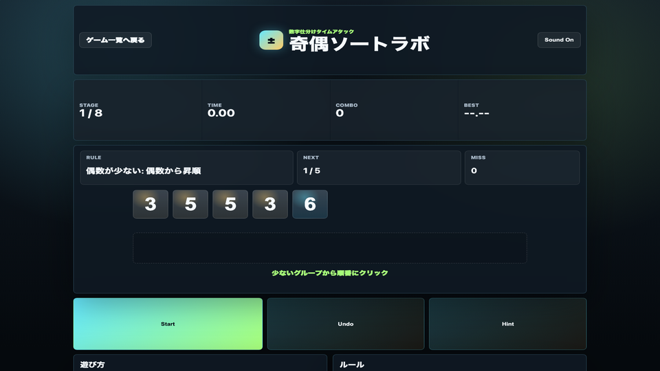

遊び方
- 表示された数字カードを、正しい順番でクリックまたはタップします。
- 全て選び終えると次のステージへ進みます。
- 8ステージをできるだけ早くクリアします。
数字パズル / 脳トレ / 無料ブラウザゲーム
奇偶ソートラボは、奇数と偶数を見分けて数字カードを正しい順番に並べる無料ブラウザ脳トレゲームです。入力式ではなくクリック式なので、スマホでもPCでもテンポよく遊べます。

最初に奇数と偶数の数を数え、少ないグループだけを頭の中で昇順にします。迷った時は小さい数字から探すと、クリック順を組み立てやすくなります。
脳トレ、数字ゲーム、判断力ゲームが好きな人におすすめです。最初に奇数と偶数の数を把握し、少ないグループから順番を組み立てると迷いにくくなります。
はい。無料ブラウザゲーム広場では、インストール不要で無料プレイできます。
スマホ・PC対応です。PC専用のゲームは大きな画面とマウス操作でのプレイを推奨しています。
目安は約1〜3分です。短時間でも遊びやすいように設計しています。